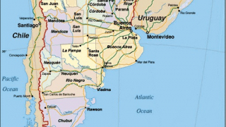

El paciente cero ¿es norteamericano?
Geopolítica
Atlantismo Global
Hace pocas semanas se cumplió el primer aniversario de los Juegos Mundiales Militares, el primer evento militar internacional celebrado en China —organizado por el Ministerio de Defensa Nacional de la República Popular de China y los Comandos Militares Mundiales—, en los que intervinieron 9,308 atletas militares de 109 países y alrededor de 230,000 voluntarios.
Los Juegos Mundiales Militares también llamados los Juegos de Guerra son competencias entre militares, tanto de disciplinas olímpicas como militares (competencia de tanques de guerra con obstáculos, tiro de larga distancia o competencias de Pentatlón Naval y Militar).Líderes de Departamentos de Defensa y militares de 42 naciones fueron invitados a asistir a la ceremonia de inauguración.
Los juegos se realizaron del 18 al 27 de octubre del 2019, ¿adónde cree usted?Sí, acertó: en la Ciudad de Wuhan, provincia de Hubei, China.Estamos hablando del lugar donde nacieron el virus y la pandemia del COVID-19 dos meses después de los Juegos de Guerra.
China, Rusia y Brasil estuvieron en el podio con más medallas de oro; los Estados Unidos —por primera vez en estos Juegos Militares— ocuparon la posición número 12 cuando habían estado entre los primeros tres lugares del podio en las ediciones recientes; esto, a pesar de que el Ejército norteamericano es el más grande del mundo y tiene los oficiales más preparados.
Estos Juegos de Guerra sirven también como una plataforma para exhibir armas a sus clientes potenciales, es un salón comercial de armamento; la compraventa de armas representa un gasto de 1.8 billones de dólares anualmente en el mundo.Los países que más gastan en armamento son los Estados Unidos, la Unión Europea y China.Este gasto es 10 veces más grande que todo el dinero disponible para ayuda humanitaria, y parece que no tendrá fin.
Según el informe del 2018, del Instituto Internacional de Estocolmo para la Investigación de la Paz «Moscú es el segundo exportador de armamento a nivel mundial, sólo superado por Washington, mientras Pekín ocupa el quinto lugar».
De acuerdo con cifras del Pentágono americano, China podría estar a la cabeza armamentista, posiblemente por encima de Rusia.Ahora, el Kremlin lidera con sus mortales y efectivos misiles hipersónicos; sin embargo, los mayores avances en ARMAMENTO BIOLÓGICO lo tienen los Estados Unidos.
En los meses siguientes a los Juegos de Guerra, se multiplicaron los testimonios de atletas que afirmaron tener síntomas compatibles con el coronavirus después de regresar a sus países de origen, como fiebre alta y severos problemas respiratorios.Los síntomas se desarrollaron varias semanas antes de que China notificara, en diciembre, a la Organización Mundial de la Salud (OMS) de que había detectado el virus en Wuhan.
La delegación española, formado por militares en activo, comentó mediante su vocero que la gripe se originó en los Estados Unidos y que fue transportada por los militares estadounidenses a China, igual que sucedió con la gripe española de 1918 durante la Primera Guerra Mundial.
El 25 de marzo, Elodie Clauvel, de 31 años, campeona mundial de pentatlón, relató al canal local Loire7 Télévisión que ella y su compañero, Valentin Belaud, cinco veces campeón mundial de pentatlón moderno, tuvieron serios problemas respiratorios en China.En las semanas siguientes, un médico militar los diagnosticaría con «síntomas obvios de coronavirus», que habrían afectado a buena parte de los 281 miembros de la delegación gala.
En España, un reportaje de la agencia EFE identificó al menos cuatro potenciales casos de militares que creen que pudieron pasar la enfermedad —dos que enfermaron en Wuhan y otros dos que presentaron los síntomas a su regreso—.Esto, a pesar de que el Ministerio de Defensa no tiene constancia de ningún caso sospechoso entre los 170 miembros de la delegación.
Un efectivo del ejército español que compitió en los juegos militares de Wuhan cuenta que varios compañeros suyos tuvieron síntomas similares a los del coronavirus a la vuelta de China.«Por grupos de WhatsApp se está comentando que pudo haber más de tres con fiebre alta a la vuelta del viaje», añadió con un tono escéptico.«Sería fácil comprobarlo con las muestras de sangre recurrentes que nos hacen», agregó.
El testimonio más reciente es el de Matteo Tagliariol, medalla oro en la competencia de esgrima individual en Beijing 2008 y uno de los 170 atletas italianos presentes en los Juegos Militares de Wuhan.«Cuando llegamos a Wuhan, casi todos enfermamos.Pero lo peor fue el regreso a casa.Después de una semana tuve fiebre muy alta, sentí que no podía respirar.La dolencia ni siquiera desapareció con antibióticos, me recuperé después de tres semanas y estuve debilitado por mucho tiempo.Entonces mi hijo y mi pareja se enfermaron.Cuando se empezó a hablar sobre el virus, me dije: 'también lo tuve'», dijo a la La Gazzetta dello Sport.
El epidemiólogo Anders Tegnell, declaró que también hubo informes de deportistas enfermos tras los juegos de Wuhan.Hasta el momento, Suecia ha sido el único país que ha admitido dos casos de Covid-19 entre sus atletas.
También hay versiones de que hubo numerosos casos de contagiados entre los 280 miembros de la expedición estadounidense; sin embargo, solamente una de las atletas —la reservista Maatje Benassi, que compitió en la prueba de ciclismo de ruta en Wuhan— ha salido a la luz pública porque ha estado viviendo blindada en su casa en Virginia, recibiendo cientos de amenazas de muerte al ser acusada por un youtuber extremista de ser la paciente cero que introdujo el virus a Estados Unidos.
El Dr. Zhong Nanshan, jefe de la Comisión Nacional de Salud de China, afirmó el 27 de febrero del 2020, que «varios estadunidenses fueron Hospitalizados por una extraña neumonía» durante los Juegos Mundiales Militares.
El director de Control y Prevención Sanitaria, Dr. Robert Redfiel, declaró ante el Congreso de los Estados Unidos, el 11 de marzo del 2020, que algunas muertes por gripe antes de la pandemia fueron identificadas como casos provocados por el virus del COVID-19.
Al mismo tiempo que se celebraba la inauguración de los Juegos Mundiales Militares, al otro lado del mundo, en la ciudad de New York, se celebraba un acontecimiento denominado El Evento 201 patrocinado por la Fundación Bill y Melinda Gates, el Foro Económico Mundial (WEF), Bloomberg, la Fundación Johns Hopkins y la ONU.En el Evento 201 se simuló un brote de un nuevo coronavirus transmitido de murciélagos a cerdos y de éstos a personas, que eventualmente se vuelve eficientemente transmisible de persona a persona, lo que deriva en una pandemia severa.«El patógeno y la enfermedad que causa se basan en gran medida en el SARS, pero es más transmisible en la comunidad por personas con síntomas leves».
El 12 de marzo del 2020, el portavoz del Ministerio de Relaciones Exteriores de China, Zhao Lijian, lanzaba a Twitter: «¿Cuándo comenzó el paciente cero en EEUU?¿Cuántas personas están infectadas?¿En qué hospitales?Puede que haya sido el ejército de EEUU el que trajo la epidemia a Wuhan.¡EEUU nos debe una explicación!», tuiteó el alto funcionario chino.Zhao Lijian, planteó la posibilidad de que «podría ser el ejército de Estados Unidos el que llevó la epidemia a Wuhan»; en este sentido hizo una conexión directa con los Juegos Militares en Wuhan.
En cambio, los Estados Unidos en voz de Donald Trump, el aún presidente, insisten en que el virus, salió del Instituto de Virología de Wuhan para hacer daño a la población mundial mediante tecnologías de bio-guerra.Diarios estadounidenses han asegurado que el coronavirus COVID-19 se originó en el laboratorio del Instituto de Virología de Wuhan como parte de un programa de investigación viral chino y no de un murciélago comido en un «mercado húmedo» de animales de Wuhan.
Por otro lado, si los investigadores lograran identificar al paciente cero, podría conocerse la fuente del virus.La comunidad médica mundial continúa considerando que pudo haber venido de un animal en estado salvaje.
Sin embargo, de acuerdo con información filtrada por un alto funcionario del gobierno de Beijing, el paciente cero es un ciudadano militar estadounidense que formó parte de la delegación en los Juegos Mundiales Militares de Wuhan (2019) y está perfectamente identificado.Los chinos contarían con su nombre completo, foto y estaría localizado a bordo de un buque de guerra con bandera de los EE.UU. Estas pruebas pretenden mostrarlas al recién electo presidente de los Estados Unidos de América, Joe Biden, en una próxima reunión de alto nivel, ya solicitada por el embajador de China en los Estados Unidos, lo que sería un escándalo a nivel mundial de explosivas proporciones.
Entonces, estimados lectores, a un año de esta pandemia, ¿el paciente cero es chino o norteamericano?
¿Ustedes que opinan?
Posted On: 2020-12-03T21:00:00




Content Date: 2020-12-03
Download Date: 2021-04-21
Document ID: L0C04APBC